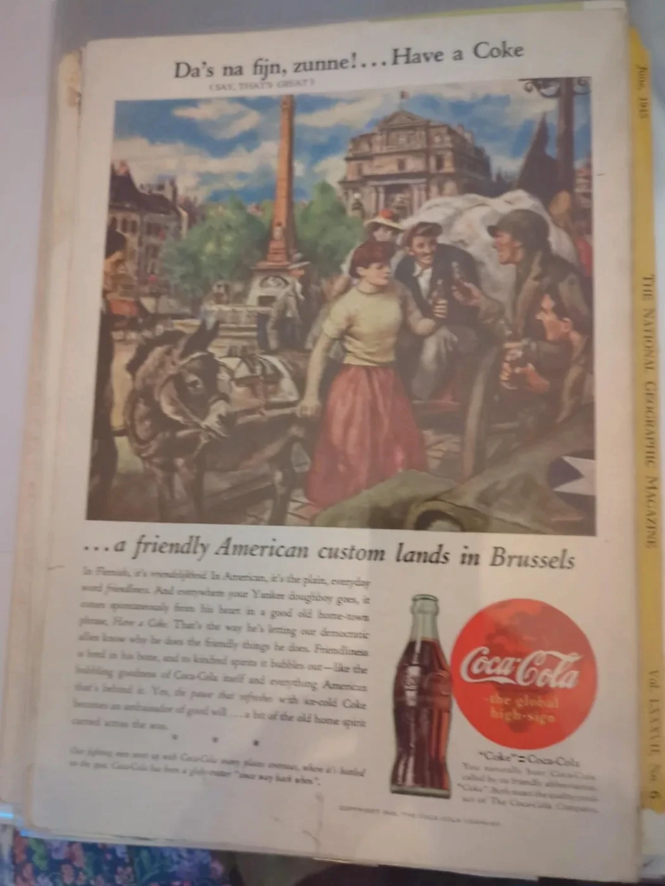
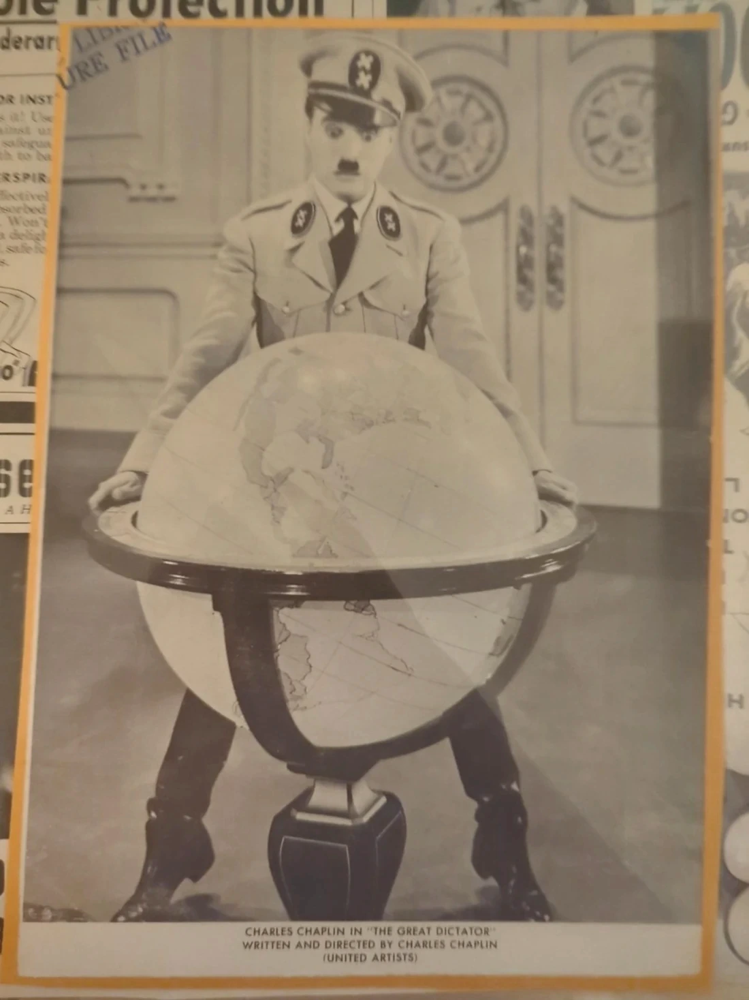
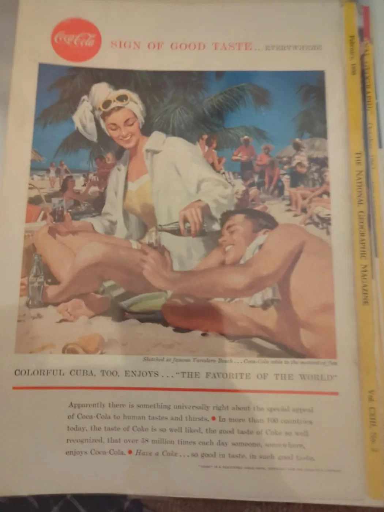

BURTON & FOUND · ORIGINAL RESEARCH TOOLS
Introducing the paper trail
Every old page
holds a clue
Found a forgotten advertisement, a movie portrait, or a scrap of history? Our free research desk helps you explore its era, compare it with the Burton archive and record what you know.
Your photographs stay in your browser · No account · No paid AI
THE DESK IS OPEN
Curiosity is collectible
Built for ephemera collectors, Hollywood enthusiasts, vintage design lovers and anyone who wonders about an old piece of paper. Results are research leads—not authentication, valuation, or proof of a particular print date.
Investigate your find
Compare your image to 40 photographed archive objects. If your image contains text, you can optionally have it read locally using open-source OCR.
Bring us a mystery
Drop in a photo of an advertisement, portrait, magazine or other paper treasure.
JPG, PNG or WebP recommended · up to 15 MB · remains on your deviceHow matching works: Visual resemblance uses colour patterns and a compact perceptual fingerprint, with optional text-based matching. It cannot reliably establish authenticity, age, authorship or market value. OCR downloads open-source software on first use and may not read decorative lettering accurately.
Your paper trail begins here
Your possible matches, dates and next research steps will appear here. Every match links directly to the shop's catalogued record.



Travel through the paper years
Choose a decade and see how advertising, fashion and cinema shifted. Each photograph comes from our actual catalogue.
Give your find a paper trail
Turn your notes into a downloadable illustrated collector's card. You decide what is verified and what remains a question.
A STORY STILL BEING WRITTEN
Your found history
Add your details to make a research record.
RESEARCH IN PROGRESSCan you date that ad?
Five real photographs. Five chances to show your eye for a vintage decade. There are clues in the typography, clothes and illustration styles—look closely.
Find the story.
Keep the history
Explore books, ephemera, film portraits, historical advertisements and curious collectibles from the Burton & Found cabinet—described carefully, pictured as they are.
Browse the objects for sale ↗